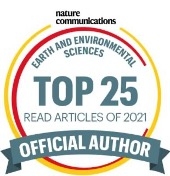

Publications
Preprints
- Girona-Mata, Orr, Widmann, Bannister, Dars, Hosking et al., Probabilistic precipitation downscaling for ungauged mountain sites: a pilot study for the Hindu Kush Karakoram Himalaya, EGUsphere
- Rouse, Debnath, Rouse, Tebbutt, Dousset, Hosking et al., Reclassifying Lethal Heat, PREPRINT (Version 1) available at Research Square
- Parthipan, Anand, Christensen, Hosking et al., Defining error accumulation in ML atmospheric simulators, ArXiv
- Vaughan, Markou, Tebbutt, Requeima, Bruinsma, Andersson, Herzog, Lane, Chantry, Hosking et al., End-to-end data-driven weather forecasting, ArXiv
- Williams, Thodoroff, Arthern, Byrne, Hosking et al., Calculating exposure to extreme sea level risk will require high resolution ice sheet models, Research Square
- Thodoroff, Kaiser, Williams, Arthern, Hosking et al., Multi-fidelity experimental design for ice-sheet simulation, NeurIPS 2022 Workshop on Gaussian Processes, Spatiotemporal Modeling, and Decision-making Systems
- Ravuri, Andersson, Kazlauskaite, Tebbutt, Turner, Hosking et al., Ice Core Dating using Probabilistic Programming, NeurIPS 2022 Workshop on Gaussian Processes, Spatiotemporal Modeling, and Decision-making Systems
- Lalchand, Tazi, Cheema, Turner, Hosking, Kernel Learning for Explainable Climate Science, 16th Bayesian Modelling Applications Workshop at UAI, 2022
- Amos, Sengupta, Young, Hosking, A continuous vertically resolved ozone dataset from the fusion of chemistry climate models with observations using a Bayesian neural network, EarthArXiv
Peer-reviewed
- Coca-Castro, Fouilloux, Barros Lourenço, McDonald, Rao, Hosking (2025) "Improving the reproducibility in geoscientific papers: lessons learned from a Hackathon in climate science", Environmental Data Science
- Tazi, Orr, Hernandez-González, Hosking et al. (2024) "Downscaling precipitation over High-mountain Asia using multi-fidelity Gaussian processes: improved estimates from ERA5", Hydrology and Earth System Sciences
- Rogers, Fox, Fleming, van Zeeland, Wilkinson, Hosking (2024) "Sea ice detection using concurrent multispectral and synthetic aperture radar imagery", Remote Sensing of Environment
- Joakimsen, Martinsen, Luppino, McDonald, Hosking et al. (2024) "Interrogating Sea Ice Predictability With Gradients", IEEE Geoscience and Remote Sensing Letters
- Jay, Yu, Crawford, Archer-Nicholls, James, Gledson, Shaddick, Haines, Lannelongue, Lines, Hosking et al. (2024) "Prioritize environmental sustainability in use of AI and data science methods", Nature Geoscience
- Evans, Faul, Fleming, Vaughan, Hosking (2023) "Unsupervised machine learning detection of iceberg populations within sea ice from dual-polarisation SAR imagery", Remote Sensing of Environment
- Andersson, Bruinsma, Markou, Requeima, Coca-Castro, Vaughan, Ellis, Lazzara, Jones, Hosking et al. (2023) "Environmental sensor placement with convolutional Gaussian neural processes", Environmental Data Science
- Parthipan, Christensen, Hosking et al. (2023) "Using probabilistic machine learning to better model temporal patterns in parameterizations: a case study with the Lorenz 96 model", Geoscientific Model Development
- Bruinsma, Markou, Requiema, Foong, Andersson, Vaughan, Buonomo, Hosking et al. (2023) "Autoregressive Conditional Neural Processes", 11th International Conference on Learning Representations (ICLR 2023)
- Summers, Mackie, Ueno, Simpson, Hosking et al. (2022) "Localized impacts and economic implications from high temperature disruption days under climate change", Climate Resilience and Sustainability
- Vaughan, Tebbutt, Hosking et al. (2022) "Convolutional conditional neural processes for local climate downscaling", Geoscientific Model Development
- Simpson, Hosking et al. (2021) "Regional disparities and seasonal differences in climate risk to rice labour", Environmental Research Letters
- Eastwood, Stubbings, Abou-Elwafa Abdallah, Durance, Paavola, Dallimer, Pantel, Johnson, Zhou, Hosking et al. (2021) "The Time Machine framework: monitoring and prediction of biodiversity loss", Trends in Ecology & Evolution
- Andersson, Hosking et al. (2021) "Seasonal Arctic sea ice forecasting with probabilistic deep learning", Nature Communications
- King, Turner, Colwell, Lu, Orr, Phillips, Hosking et al. (2021) "Inhomogeneity of the Surface Air Temperature Record from Halley, Antarctica", Journal of Climate
- Haupt, Chapman, Adams, Kirkwood, Hosking et al. (2021) "Towards implementing artificial intelligence post-processing in weather and climate: proposed actions from the Oxford 2019 workshop", Philosophical Transactions of the Royal Society A: Mathematical, Physical and Engineering Sciences
- Sengupta, Amos, Hosking et al. (2020) "Ensembling geophysical models with Bayesian Neural Networks", Advances in Neural Information Processing Systems (NeurIPS) 2020
- Bruinsma, Perim, Tebbutt, Hosking et al. (2020) "Scalable Exact Inference in Multi-Output Gaussian Processes", Proceedings of the 37th International Conference on Machine Learning, Vienna, Austria, PMLR 119, 2020
- Orr, Hosking et al. (2020) "Polar stratospheric clouds initiated by mountain waves in a global chemistry--climate model: a missing piece in fully modelling polar stratospheric ozone depletion", Atmospheric Chemistry and Physics
- Amos, Young, Hosking et al. (2020) "Projecting ozone hole recovery using an ensemble of chemistry-climate models weighted by model performance and independence", Atmospheric Chemistry and Physics
- Bracegirdle, Holmes, Hosking et al. (2020) "Improvements in Circumpolar Southern Hemisphere Extratropical Atmospheric Circulation in CMIP6 Compared to CMIP5", Earth and Space Science
- McCrystall, Hosking et al. (2020) "The impact of changes in tropical sea surface temperatures over 1979-2012 on Northern hemisphere high latitude climate", Journal of Climate
- Kapetas, Kazakis, Voudouris, Martinez, Hosking (2019) "Modelling Groundwater - Surface Water Interactions Under Climate Change Scenarios: insights from Axios Delta, Greece", ICONHIC 2019: 2nd International Conference on Natural Hazards & Infrastructure, Chania, Greece
- Bannister, Orr, Jain, Holman, Momblanch, Phillips, Adeloye, Snapir, Waine, Hosking et al. (2019) "Bias correction of high-resolution regional climate model precipitation output gives the best estimates of precipitation in Himalayan catchments", Journal of Geophysical Research: Atmospheres
- Turner, Phillips, Thamban, Rahaman, Marshall, Wille, Favier, Winton, Thomas, Wang, Broeke, Hosking et al. (2019) "The Dominant Role of Extreme Precipitation Events in Antarctic Snowfall Variability", Geophysical Research Letters
- Deb, Orr, Bromwich, Nicolas, Turner, Hosking (2018) "Summer Drivers of Atmospheric Variability Affecting Ice Shelf Thinning in the Amundsen Sea Embayment, West Antarctica", Geophysical Research Letters
- Hosking et al. (2018) "Changes in European wind energy generation potential within a 1.5C warmer world", Environmental Research Letters
- King, Bannister, Hosking et al. (2017) "Causes of the Antarctic region record high temperature at Signy Island, 30th January 1982", Atmospheric Science Letters
- Hosking et al. (2017) "Accumulation in coastal West Antarctic ice core records and the role of cyclone activity", Geophysical Research Letters
- Bannister, Herzog, Graf, Hosking et al. (2017) "An Assessment of Recent and Future Temperature Change over the Sichuan Basin, China, Using CMIP5 Climate Models", Journal of Climate
- Turner, Phillips, Marshall, Hosking et al. (2017) "Unprecedented springtime retreat of Antarctic sea ice in 2016", Geophysical Research Letters
- Moffat-Griffin, Taylor, Nakamura, Kavanagh, Hosking et al. (2017) "3rd ANtarctic Gravity Wave Instrument Network (ANGWIN) science workshop", Advances in Atmospheric Sciences
- Turner, Hosking et al. (2017) "Variability and trends in the Southern Hemisphere high latitude, quasi-stationary planetary waves", International Journal of Climatology
- Turner, Lu, White, King, Phillips, Hosking et al. (2016) "Absence of 21st century warming on Antarctic Peninsula consistent with natural variability", Nature
- Deb, Orr, Hosking et al. (2016) "An assessment of the Polar Weather Research and Forecasting (WRF) model representation of near-surface meteorological variables over West Antarctica", Journal of Geophysical Research: Atmospheres
- Hosking et al. (2016) "Future circulation changes off West Antarctica: Sensitivity of the Amundsen Sea Low to projected anthropogenic forcing", Geophysical Research Letters
- Raphael, Marshall, Turner, Fogt, Schneider, Dixon, Hosking et al. (2016) "The Amundsen Sea Low: Variability, Change, and Impact on Antarctic Climate", Bulletin of the American Meteorological Society
- Turner, Hosking et al. (2016) "Antarctic sea ice increase dominated by intrinsic variability of the Amundsen Sea Low", Climate Dynamics
- Thomas, Hosking et al. (2015) "Twentieth century increase in snowfall in coastal West Antarctica", Geophysical Research Letters
- Turner, Hosking et al. (2015) "Recent Changes in Antarctic Sea Ice", Philosophical Transactions of the Royal Society of London A: Mathematical, Physical and Engineering Sciences
- Chemel, Russo, Hosking et al. (2015) "Sensitivity of tropical deep convection in global models: effects of horizontal resolution, surface constraints and 3D atmospheric nudging", Atmospheric Science Letters
- Orr, Hosking et al. (2015) "Inclusion of mountain-wave-induced cooling for the formation of PSCs over the Antarctic Peninsula in a chemistry-climate model", Atmospheric Chemistry and Physics
- Hosking et al. (2015) "Orographic disturbances of surface winds over the shelf waters adjacent to South Georgia", Atmospheric Science Letters
- Orr, Phillips, Webster, Elvidge, Weeks, Hosking et al. (2014) "Met Office Unified Model high resolution simulations of a strong wind event in Antarctica", Quarterly Journal of the Royal Meteorological Society
- Bracegirdle, Turner, Hosking et al. (2014) "Sources of uncertainty in projections of twenty-first century westerly wind changes over the Amundsen Sea, West Antarctica, in CMIP5 climate models", Climate Dynamics
- Turner, Hosking et al. (2013) "Temporal and spatial evolution of the Antarctic sea ice prior to the September 2012 record maximum extent", Geophysical Research Letters
- Hosking et al. (2013) "The influence of the Amundsen-Bellingshausen Seas Low on the climate of West Antarctica and its representation in coupled climate model simulations", Journal of Climate
- Turner, Phillips, Hosking et al. (2013) "The Amundsen Sea Low", International Journal of Climatology
- Barrand, Vaughan, Steiner, Tedesco, Kuipers Munneke, Broeke, Hosking (2013) "Trends in Antarctic Peninsula surface melting conditions from observations and regional climate modelling", Journal of Geophysical Research: Earth Surface
- Turner, Bracegirdle, Phillips, Marshall, Hosking (2013) "An Initial Assessment of Antarctic Sea Ice Extent in the CMIP5 Models", Journal of Climate
- Orr, Bracegirdle, Hosking et al. (2013) "Strong dynamical modulation of the cooling of the polar stratosphere associated with the Antarctic ozone hole", Journal of Climate
- Orr, Bracegirdle, Hosking et al. (2012) "Possible Dynamical Mechanisms for Southern Hemisphere Climate Change due to the Ozone Hole", Journal of the Atmospheric Sciences
- Hosking et al. (2012) "Tropical convective transport and the Walker circulation", Atmospheric Chemistry and Physics
- Hoyle, Marécal, Russo, Allen, Arteta, Chemel, Chipperfield, D'Amato, Dessens, Feng, Hamilton, Harris, Hosking et al. (2011) "Representation of tropical deep convection in atmospheric models - Part 2: Tracer transport", Atmospheric Chemistry and Physics
- Russo, Marécal, Hoyle, Arteta, Chemel, Chipperfield, Dessens, Feng, Hosking et al. (2011) "Representation of tropical deep convection in atmospheric models - Part 1: Meteorology and comparison with satellite observations", Atmospheric Chemistry and Physics
- Hosking et al. (2010) "Modelling deep convection and its impacts on the tropical tropopause layer", Atmospheric Chemistry and Physics
Reports
- Conner, Hosking et al. (2023) "Tackling climate change with data science and AI", The Alan Turing Institute
- Patterson et al. (2020) "Spatial Finance: Challenges and Opportunities in a Changing World", WWF and World Bank Group
- Wolff et al. (2018) "Geoengineering", Global Environmental Research Committee (GERC), Royal Society
- Wolff et al. (2017) "Air quality", Global Environmental Research Committee (GERC), Royal Society
- Wolff et al. (2017) "Biodiversity", Global Environmental Research Committee (GERC), Royal Society
- Wolff et al. (2016) "Natural Resources", Global Environmental Research Committee (GERC), Royal Society
- Wolff et al. (2016) "Climate", Global Environmental Research Committee (GERC), Royal Society
- Maycock, Hosking et al. (2013) "Key Points from the IPCC WGI Fifth Assessment Report. Climate Change 2013: The Physical Science Basis", Cambridge Centre for Climate Science (CCfCS)
PhD Thesis
Datasets
